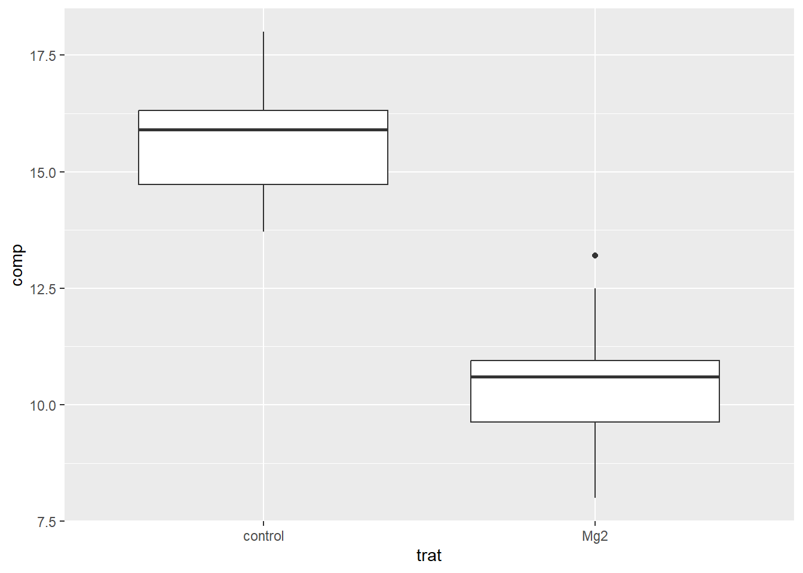
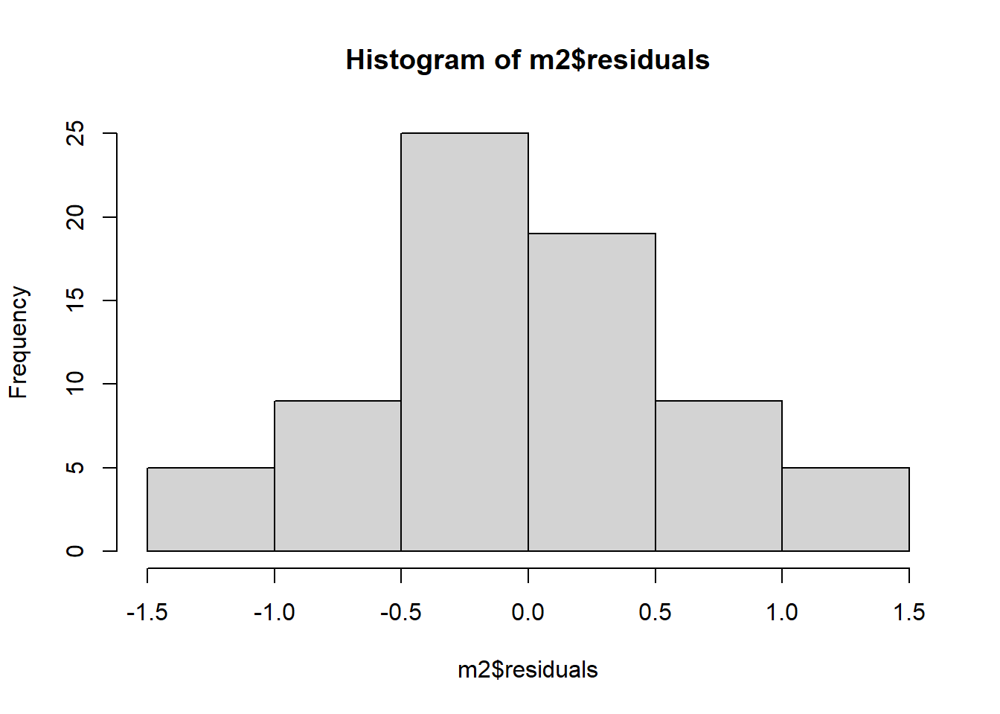
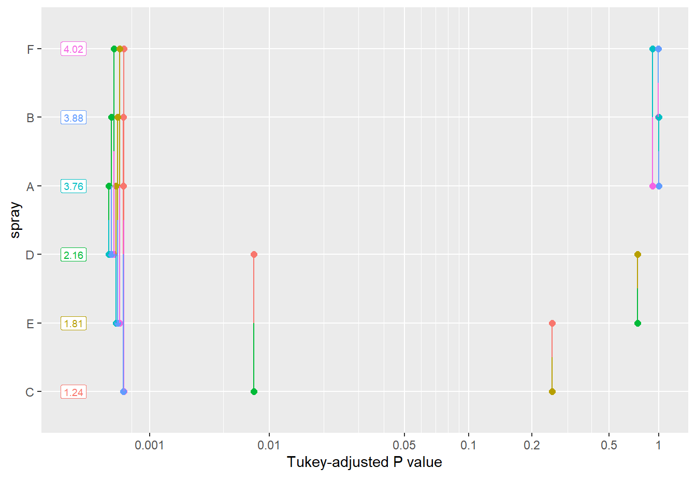

library(tidyverse)
library(emmeans)
library(report)
library(MASS)
library(agricolae)
library(see)
library(estimability)
library(car)Pacotes utilizados
Inferencial
Teste T
Dois grupos independentes
library(gsheet)
mg <- gsheet2tbl("https://docs.google.com/spreadsheets/d/1bq2N19DcZdtax2fQW9OHSGMR0X2__Z9T/edit#gid=983033137")Visualização
library(ggplot2)
mg |>
ggplot(aes(trat, comp))+
geom_boxplot()
Teste T - t.test
mg2 <- mg |>
tidyr::pivot_wider(names_from = trat,
values_from = comp)
teste1 <- t.test(mg2$control, mg2$Mg2)Teste de normalidade
shapiro.test(mg2$control)
Shapiro-Wilk normality test
data: mg2$control
W = 0.93886, p-value = 0.5404hist(mg2$control)
shapiro.test(mg2$Mg2)
Shapiro-Wilk normality test
data: mg2$Mg2
W = 0.97269, p-value = 0.9146hist(mg2$Mg2)
Outra forma de verificar a normalidade:
qqnorm(mg2$control)
qqline(mg2$control)
Teste de variância
var.test(mg2$control, mg2$Mg2)
F test to compare two variances
data: mg2$control and mg2$Mg2
F = 0.67654, num df = 9, denom df = 9, p-value = 0.5698
alternative hypothesis: true ratio of variances is not equal to 1
95 percent confidence interval:
0.1680428 2.7237436
sample estimates:
ratio of variances
0.6765394 t.test(mg2$control, mg2$Mg2,
var.equal = FALSE)
Welch Two Sample t-test
data: mg2$control and mg2$Mg2
t = 8.1549, df = 17.354, p-value = 2.423e-07
alternative hypothesis: true difference in means is not equal to 0
95 percent confidence interval:
3.825607 6.490393
sample estimates:
mean of x mean of y
15.678 10.520 report(teste1)Effect sizes were labelled following Cohen's (1988) recommendations.
The Welch Two Sample t-test testing the difference between mg2$control and
mg2$Mg2 (mean of x = 15.68, mean of y = 10.52) suggests that the effect is
positive, statistically significant, and large (difference = 5.16, 95% CI
[3.83, 6.49], t(17.35) = 8.15, p < .001; Cohen's d = 3.65, 95% CI [2.14, 5.12])micelial <- gsheet2tbl("https://docs.google.com/spreadsheets/d/1bq2N19DcZdtax2fQW9OHSGMR0X2__Z9T/edit#gid=959387827")
micelial |>
ggplot(aes(especie, tcm))+
geom_jitter(width = 0.01)+
stat_summary(
geom = "point",
fun.y = "mean",
size = 3,
color = "red"
)Teste Anova
Obs: dados modificados anteriormente.
m1 <- lm(tcm ~especie, data = micelial)
anova(m1)Analysis of Variance Table
Response: tcm
Df Sum Sq Mean Sq F value Pr(>F)
especie 4 1.46958 0.36739 19.629 2.028e-07 ***
Residuals 25 0.46792 0.01872
---
Signif. codes: 0 '***' 0.001 '**' 0.01 '*' 0.05 '.' 0.1 ' ' 1summary(m1)
Call:
lm(formula = tcm ~ especie, data = micelial)
Residuals:
Min 1Q Median 3Q Max
-0.23667 -0.09667 0.01583 0.08833 0.28333
Coefficients:
Estimate Std. Error t value Pr(>|t|)
(Intercept) 1.57167 0.05585 28.140 < 2e-16 ***
especieFaus -0.33500 0.07899 -4.241 0.000266 ***
especieFcor -0.25000 0.07899 -3.165 0.004047 **
especieFgra -0.66000 0.07899 -8.356 1.05e-08 ***
especieFmer -0.14500 0.07899 -1.836 0.078317 .
---
Signif. codes: 0 '***' 0.001 '**' 0.01 '*' 0.05 '.' 0.1 ' ' 1
Residual standard error: 0.1368 on 25 degrees of freedom
Multiple R-squared: 0.7585, Adjusted R-squared: 0.7199
F-statistic: 19.63 on 4 and 25 DF, p-value: 2.028e-07Verificar a diferença entre as médias
Utiliza-se o pacote emmeans
library(emmeans)
medias1 <- emmeans(m1, ~especie)
library(multcomp)
library(multcompView)
cld(medias1) especie emmean SE df lower.CL upper.CL .group
Fgra 0.912 0.0559 25 0.797 1.03 1
Faus 1.237 0.0559 25 1.122 1.35 2
Fcor 1.322 0.0559 25 1.207 1.44 2
Fmer 1.427 0.0559 25 1.312 1.54 23
Fasi 1.572 0.0559 25 1.457 1.69 3
Confidence level used: 0.95
P value adjustment: tukey method for comparing a family of 5 estimates
significance level used: alpha = 0.05
NOTE: If two or more means share the same grouping symbol,
then we cannot show them to be different.
But we also did not show them to be the same. Verificando as Premissas
# Testar normalidade:
hist(m1$residuals)
shapiro.test(m1$residuals)
Shapiro-Wilk normality test
data: m1$residuals
W = 0.9821, p-value = 0.8782# Variâncias:
bartlett.test(tcm ~especie, data = micelial)
Bartlett test of homogeneity of variances
data: tcm by especie
Bartlett's K-squared = 4.4367, df = 4, p-value = 0.3501library(DHARMa)
plot(simulateResiduals(m1))
library(performance)
check_normality(m1)OK: residuals appear as normally distributed (p = 0.878).check_heteroscedasticity(m1) OK: Error variance appears to be homoscedastic (p = 0.880).check_model(m1)Outro conjunto de dados onde as premissas não foram atendidas:
Importação dos dados
inseticida <- InsectSprays
inseticida |>
count(spray) spray n
1 A 12
2 B 12
3 C 12
4 D 12
5 E 12
6 F 12inseticida |>
ggplot(aes(spray, count))+
geom_boxplot()
# lm = ajusta anova
m1 <- lm(count ~ spray,
data = inseticida)
summary(m1)
Call:
lm(formula = count ~ spray, data = inseticida)
Residuals:
Min 1Q Median 3Q Max
-8.333 -1.958 -0.500 1.667 9.333
Coefficients:
Estimate Std. Error t value Pr(>|t|)
(Intercept) 14.5000 1.1322 12.807 < 2e-16 ***
sprayB 0.8333 1.6011 0.520 0.604
sprayC -12.4167 1.6011 -7.755 7.27e-11 ***
sprayD -9.5833 1.6011 -5.985 9.82e-08 ***
sprayE -11.0000 1.6011 -6.870 2.75e-09 ***
sprayF 2.1667 1.6011 1.353 0.181
---
Signif. codes: 0 '***' 0.001 '**' 0.01 '*' 0.05 '.' 0.1 ' ' 1
Residual standard error: 3.922 on 66 degrees of freedom
Multiple R-squared: 0.7244, Adjusted R-squared: 0.7036
F-statistic: 34.7 on 5 and 66 DF, p-value: < 2.2e-16anova(m1)Analysis of Variance Table
Response: count
Df Sum Sq Mean Sq F value Pr(>F)
spray 5 2668.8 533.77 34.702 < 2.2e-16 ***
Residuals 66 1015.2 15.38
---
Signif. codes: 0 '***' 0.001 '**' 0.01 '*' 0.05 '.' 0.1 ' ' 1hist(m1$residuals)
shapiro.test(m1$residuals)
Shapiro-Wilk normality test
data: m1$residuals
W = 0.96006, p-value = 0.02226qqnorm(m1$residuals)
qqline(m1$residuals)
bartlett.test(count ~ spray,
data = inseticida)
Bartlett test of homogeneity of variances
data: count by spray
Bartlett's K-squared = 25.96, df = 5, p-value = 9.085e-05library(performance)
check_normality(m1)Warning: Non-normality of residuals detected (p = 0.022).check_heteroscedasticity(m1)Warning: Heteroscedasticity (non-constant error variance) detected (p < .001).library(DHARMa)
plot(simulateResiduals(m1))
1- Fazer a transformação dos dados
Função sqrt faz a raiz quadrada.
inseticida <- inseticida |>
mutate(count2 = sqrt(count))
inseticida |>
ggplot(aes(spray, count2))+
geom_boxplot()
m2 <- lm(count2 ~ spray,
data = inseticida)
summary(m2)
Call:
lm(formula = count2 ~ spray, data = inseticida)
Residuals:
Min 1Q Median 3Q Max
-1.24486 -0.39970 -0.01902 0.42661 1.40089
Coefficients:
Estimate Std. Error t value Pr(>|t|)
(Intercept) 3.7607 0.1814 20.733 < 2e-16 ***
sprayB 0.1160 0.2565 0.452 0.653
sprayC -2.5158 0.2565 -9.807 1.64e-14 ***
sprayD -1.5963 0.2565 -6.223 3.80e-08 ***
sprayE -1.9512 0.2565 -7.606 1.34e-10 ***
sprayF 0.2579 0.2565 1.006 0.318
---
Signif. codes: 0 '***' 0.001 '**' 0.01 '*' 0.05 '.' 0.1 ' ' 1
Residual standard error: 0.6283 on 66 degrees of freedom
Multiple R-squared: 0.7724, Adjusted R-squared: 0.7552
F-statistic: 44.8 on 5 and 66 DF, p-value: < 2.2e-16anova(m2)Analysis of Variance Table
Response: count2
Df Sum Sq Mean Sq F value Pr(>F)
spray 5 88.438 17.6876 44.799 < 2.2e-16 ***
Residuals 66 26.058 0.3948
---
Signif. codes: 0 '***' 0.001 '**' 0.01 '*' 0.05 '.' 0.1 ' ' 1hist(m2$residuals)
shapiro.test(m2$residuals)
Shapiro-Wilk normality test
data: m2$residuals
W = 0.98721, p-value = 0.6814qqnorm(m2$residuals)
qqline(m2$residuals)
bartlett.test(count2 ~spray,
data = inseticida)
Bartlett test of homogeneity of variances
data: count2 by spray
Bartlett's K-squared = 3.7525, df = 5, p-value = 0.5856check_normality(m2)OK: residuals appear as normally distributed (p = 0.681).check_heteroscedasticity(m2)OK: Error variance appears to be homoscedastic (p = 0.854).plot(simulateResiduals(m2)) #melhorou ainda mais a normmalidade e variância deu ñ significativo
m1_medias <- emmeans(m1, ~ spray,)
plot(m1_medias)
cld(m1_medias) spray emmean SE df lower.CL upper.CL .group
C 2.08 1.13 66 -0.177 4.34 1
E 3.50 1.13 66 1.240 5.76 1
D 4.92 1.13 66 2.656 7.18 1
A 14.50 1.13 66 12.240 16.76 2
B 15.33 1.13 66 13.073 17.59 2
F 16.67 1.13 66 14.406 18.93 2
Confidence level used: 0.95
P value adjustment: tukey method for comparing a family of 6 estimates
significance level used: alpha = 0.05
NOTE: If two or more means share the same grouping symbol,
then we cannot show them to be different.
But we also did not show them to be the same. m2_medias <- emmeans(m2, ~ spray,)
plot(m2_medias)
cld(m2_medias) spray emmean SE df lower.CL upper.CL .group
C 1.24 0.181 66 0.883 1.61 1
E 1.81 0.181 66 1.447 2.17 12
D 2.16 0.181 66 1.802 2.53 2
A 3.76 0.181 66 3.399 4.12 3
B 3.88 0.181 66 3.514 4.24 3
F 4.02 0.181 66 3.656 4.38 3
Confidence level used: 0.95
P value adjustment: tukey method for comparing a family of 6 estimates
significance level used: alpha = 0.05
NOTE: If two or more means share the same grouping symbol,
then we cannot show them to be different.
But we also did not show them to be the same. pwpm(m2_medias) A B C D E F
A [3.76] 0.9975 <.0001 <.0001 <.0001 0.9145
B -0.116 [3.88] <.0001 <.0001 <.0001 0.9936
C 2.516 2.632 [1.24] 0.0081 0.2513 <.0001
D 1.596 1.712 -0.919 [2.16] 0.7366 <.0001
E 1.951 2.067 -0.565 0.355 [1.81] <.0001
F -0.258 -0.142 -2.774 -1.854 -2.209 [4.02]
Row and column labels: spray
Upper triangle: P values adjust = "tukey"
Diagonal: [Estimates] (emmean)
Lower triangle: Comparisons (estimate) earlier vs. laterpwpp(m2_medias)
pairs(m2_medias) contrast estimate SE df t.ratio p.value
A - B -0.116 0.257 66 -0.452 0.9975
A - C 2.516 0.257 66 9.807 <.0001
A - D 1.596 0.257 66 6.223 <.0001
A - E 1.951 0.257 66 7.606 <.0001
A - F -0.258 0.257 66 -1.006 0.9145
B - C 2.632 0.257 66 10.259 <.0001
B - D 1.712 0.257 66 6.675 <.0001
B - E 2.067 0.257 66 8.058 <.0001
B - F -0.142 0.257 66 -0.554 0.9936
C - D -0.919 0.257 66 -3.584 0.0081
C - E -0.565 0.257 66 -2.201 0.2513
C - F -2.774 0.257 66 -10.813 <.0001
D - E 0.355 0.257 66 1.383 0.7366
D - F -1.854 0.257 66 -7.229 <.0001
E - F -2.209 0.257 66 -8.612 <.0001
P value adjustment: tukey method for comparing a family of 6 estimates Outra forma de transformação:
b <- boxcox(lm(inseticida$count+0.1 ~1))
lambda <- b$x[which.max(b$y)]
inseticida$count3 <- (inseticida$count ^ lambda - 1) / lambda
m5 <- lm(count3 ~ spray,
data = inseticida)
summary(m5)
Call:
lm(formula = count3 ~ spray, data = inseticida)
Residuals:
Min 1Q Median 3Q Max
-2.74114 -0.65893 -0.01922 0.78560 2.64047
Coefficients:
Estimate Std. Error t value Pr(>|t|)
(Intercept) 4.8835 0.3232 15.109 < 2e-16 ***
sprayB 0.1910 0.4571 0.418 0.677
sprayC -4.4995 0.4571 -9.843 1.42e-14 ***
sprayD -2.7157 0.4571 -5.941 1.17e-07 ***
sprayE -3.3605 0.4571 -7.352 3.82e-10 ***
sprayF 0.4162 0.4571 0.911 0.366
---
Signif. codes: 0 '***' 0.001 '**' 0.01 '*' 0.05 '.' 0.1 ' ' 1
Residual standard error: 1.12 on 66 degrees of freedom
Multiple R-squared: 0.7659, Adjusted R-squared: 0.7482
F-statistic: 43.19 on 5 and 66 DF, p-value: < 2.2e-16anova(m5)Analysis of Variance Table
Response: count3
Df Sum Sq Mean Sq F value Pr(>F)
spray 5 270.737 54.147 43.191 < 2.2e-16 ***
Residuals 66 82.742 1.254
---
Signif. codes: 0 '***' 0.001 '**' 0.01 '*' 0.05 '.' 0.1 ' ' 1hist(m5$residuals)shapiro.test(m5$residuals)
Shapiro-Wilk normality test
data: m5$residuals
W = 0.98873, p-value = 0.7723qqnorm(m5$residuals)
qqline(m5$residuals)
bartlett.test(count3 ~spray,
data = inseticida)
Bartlett test of homogeneity of variances
data: count3 by spray
Bartlett's K-squared = 5.7412, df = 5, p-value = 0.33222- teste não paramétrico:
kruskal.test(count ~spray,
data = inseticida)
Kruskal-Wallis rank sum test
data: count by spray
Kruskal-Wallis chi-squared = 54.691, df = 5, p-value = 1.511e-10m3 <- kruskal(inseticida$count,
inseticida$spray,
group = TRUE)3- GLMs
m4 <- glm(count ~ spray,
family = gaussian,
data = inseticida)
m4 <- glm(count ~ spray,
family = poisson,
data = inseticida)
summary(m4)
Call:
glm(formula = count ~ spray, family = poisson, data = inseticida)
Coefficients:
Estimate Std. Error z value Pr(>|z|)
(Intercept) 2.67415 0.07581 35.274 < 2e-16 ***
sprayB 0.05588 0.10574 0.528 0.597
sprayC -1.94018 0.21389 -9.071 < 2e-16 ***
sprayD -1.08152 0.15065 -7.179 7.03e-13 ***
sprayE -1.42139 0.17192 -8.268 < 2e-16 ***
sprayF 0.13926 0.10367 1.343 0.179
---
Signif. codes: 0 '***' 0.001 '**' 0.01 '*' 0.05 '.' 0.1 ' ' 1
(Dispersion parameter for poisson family taken to be 1)
Null deviance: 409.041 on 71 degrees of freedom
Residual deviance: 98.329 on 66 degrees of freedom
AIC: 376.59
Number of Fisher Scoring iterations: 5anova(m4)Analysis of Deviance Table
Model: poisson, link: log
Response: count
Terms added sequentially (first to last)
Df Deviance Resid. Df Resid. Dev
NULL 71 409.04
spray 5 310.71 66 98.33Anova(m4)Analysis of Deviance Table (Type II tests)
Response: count
LR Chisq Df Pr(>Chisq)
spray 310.71 5 < 2.2e-16 ***
---
Signif. codes: 0 '***' 0.001 '**' 0.01 '*' 0.05 '.' 0.1 ' ' 1plot(simulateResiduals(m4))m4_medias <- emmeans(m4, ~spray,
type = "response")
cld(m4_medias) spray rate SE df asymp.LCL asymp.UCL .group
C 2.08 0.417 Inf 1.41 3.08 1
E 3.50 0.540 Inf 2.59 4.74 12
D 4.92 0.640 Inf 3.81 6.35 2
A 14.50 1.099 Inf 12.50 16.82 3
B 15.33 1.130 Inf 13.27 17.72 3
F 16.67 1.179 Inf 14.51 19.14 3
Confidence level used: 0.95
Intervals are back-transformed from the log scale
P value adjustment: tukey method for comparing a family of 6 estimates
Tests are performed on the log scale
significance level used: alpha = 0.05
NOTE: If two or more means share the same grouping symbol,
then we cannot show them to be different.
But we also did not show them to be the same. Anova 2 fatores
- Modelo fatorial
Importa os dados
theme_set(theme_bw())
li <- gsheet2tbl("https://docs.google.com/spreadsheets/d/1bq2N19DcZdtax2fQW9OHSGMR0X2__Z9T/edit#gid=2023059672")
li |>
ggplot(aes(factor(dose), severity, color = factor(dose)))+
geom_jitter(width = 0.05)+
facet_wrap(~~treat)li |>
ggplot(aes(factor(treat), severity, color = factor(dose)))+
geom_jitter(width = 0.05)Anova
mf <- lm(severity ~treat*factor(dose),
data = li)
anova(mf)Analysis of Variance Table
Response: severity
Df Sum Sq Mean Sq F value Pr(>F)
treat 1 0.113232 0.113232 30.358 4.754e-05 ***
factor(dose) 1 0.073683 0.073683 19.755 0.0004077 ***
treat:factor(dose) 1 0.072739 0.072739 19.502 0.0004326 ***
Residuals 16 0.059678 0.003730
---
Signif. codes: 0 '***' 0.001 '**' 0.01 '*' 0.05 '.' 0.1 ' ' 1Testar as premissas
plot(simulateResiduals(mf))
Comparar colunas
mf_medias <- emmeans(mf, ~ treat | dose)
cld(mf_medias) dose = 0.5:
treat emmean SE df lower.CL upper.CL .group
Tebuconazole 0.0210 0.0273 16 -0.03690 0.0789 1
Ionic liquid 0.2921 0.0273 16 0.23420 0.3500 2
dose = 2.0:
treat emmean SE df lower.CL upper.CL .group
Tebuconazole 0.0202 0.0273 16 -0.03768 0.0781 1
Ionic liquid 0.0501 0.0273 16 -0.00781 0.1080 1
Confidence level used: 0.95
significance level used: alpha = 0.05
NOTE: If two or more means share the same grouping symbol,
then we cannot show them to be different.
But we also did not show them to be the same. Comparar linhas
mf_medias <- emmeans(mf, ~ dose | treat)
cld(mf_medias)treat = Ionic liquid:
dose emmean SE df lower.CL upper.CL .group
2.0 0.0501 0.0273 16 -0.00781 0.1080 1
0.5 0.2921 0.0273 16 0.23420 0.3500 2
treat = Tebuconazole:
dose emmean SE df lower.CL upper.CL .group
2.0 0.0202 0.0273 16 -0.03768 0.0781 1
0.5 0.0210 0.0273 16 -0.03690 0.0789 1
Confidence level used: 0.95
significance level used: alpha = 0.05
NOTE: If two or more means share the same grouping symbol,
then we cannot show them to be different.
But we also did not show them to be the same.